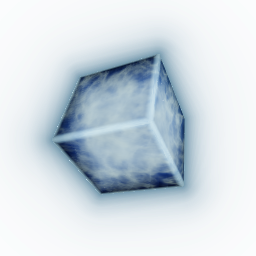

A portfolio in six stones
DhruvTanwar
Full-stack engineer · open-source contributor · builder of strange, beautiful things
Drag to turn it. Strike it three times.

Before creation, there were six singularities.
When the universe began, they were forged into stones.
They are scattered across this page.
Find them.
A portfolio in six stones
Full-stack engineer · open-source contributor · builder of strange, beautiful things

Half of everything is gone.
One stone can still undo it.